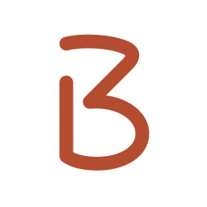

3bstays · guía de marca · 10 noviembre 2026
Una marca para el contacto directo

Qué es
Un catálogo de alojamientos turísticos en Costa Rica que da visibilidad a los propietarios y facilita el contacto directo con los viajeros por WhatsApp. La plataforma no gestiona las reservas ni los pagos entre las partes.
Origen
3bstays nace de la experiencia de una propietaria con una casa en el Caribe de Costa Rica. Para alquilarla, Ana recurría a plataformas que cobraban comisiones. Al mismo tiempo, observó que muchos propietarios buscaban alquileres directos y que una parte importante de esas consultas procedía del turismo local.
En temporada baja consiguió alquileres directos a través de Facebook. La búsqueda, sin embargo, estaba dispersa entre grupos, anuncios y páginas locales. Esa experiencia le mostró una oportunidad: reunir alojamientos en un catálogo dedicado, dar visibilidad a quienes los alquilan y facilitar el contacto directo. Así surge 3bstays.
Propósito y público
Reunir una oferta que antes estaba dispersa en grupos, anuncios y páginas locales. Hablamos tanto a propietarios que quieren reservas directas como a viajeros que buscan un alojamiento y desean hablar con su anfitrión.
Personalidad
Cercana, cálida y de confianza. Claridad, respeto y transparencia. Las formulaciones de misión, visión y valores son una síntesis editorial de este propósito, no nuevos compromisos comerciales.
Una sola geometría en todos los soportes
El logo y su símbolo

Logo principal
3 angular con remate plano, B abierta con el asta a la altura de la «s» y «stays» en minúsculas. Las tres partes comparten base. La B lleva un trazo más fino dentro del logotipo y reforzado en los iconos. La variante con dominio es 3bstays.com.
Composiciones y tamaños
Sin marco para la mayoría de los usos. También hay versiones con doble marco de puntos, con y sin .com. Mínimos recomendados: logo 160 px de ancho, logo con dominio 240 px; marco de puntos 240 px. Por debajo, usar solo el símbolo B. Estos umbrales son recomendaciones de legibilidad, no tamaños de archivo.
Iconos y área de respeto
Solo el símbolo B, sin 3 añadido, letras ni marco, en todos los tamaños. Dejar alrededor del logo al menos media altura de una minúscula y, alrededor del símbolo aislado, un cuarto de su altura. Mantener los márgenes del archivo de perfiles y aplicaciones.
Evitar
No estirar, girar ni cambiar por una fuente. No unir el centro de la B al palo ni alterar sus curvas. No añadir sombras, contornos ni desenfoques. No emplear los marcos de puntos como favicon.
Terracota original y crema como pareja principal
Color y tipografía

Paleta
Terracota original #B44C30 (RGB 180, 76, 48). Crema #FFFBF2 (255, 251, 242). Tinta de pantalla #1C2B2A (28, 43, 42). Carbón cálido de merchandising #2B2926 (43, 41, 38). Blanco #FFFFFF para fotografías. Turquesa, ocre y verde de las exploraciones no son colores principales aprobados para este logo.
Fondos y transparencia
Logo terracota sobre fondos claros; crema sobre terracota o fondos oscuros; blanco sobre una zona suficientemente oscura de la fotografía. SVG y PNG de los logos sin fondo: el crema visible pertenece al soporte. Los perfiles y los iconos de instalación sí incluyen un fondo deliberado.
Fuentes de la web
Se conservan las fuentes existentes: Figtree para interfaz y texto; Outfit para los usos de portada y acentos ya definidos. La aplicación mantiene sus jerarquías vigentes. El logo es un dibujo vectorial propio y no se vuelve a escribir con estas fuentes. Fuentes y licencias OFL incluidas en fuentes/.
Impresión
Preferir SVG o EPS vectorial. Los PNG de impresión están a 300 ppp y siguen siendo RGB; no confundirlos con CMYK. Las tintas CMYK se convierten con un perfil ICC y deben ajustarse con la imprenta al papel, tejido y proceso. No se ha asignado un Pantone equivalente.
Consistencia sin perder claridad
Aplicaciones y comunicación

Web y fotografías
En cabecera usar el logo sin marco y sin fondo. Para aplicaciones sobre fotos, colocar el logo blanco en una zona que permita leerlo: ninguna tinta fija garantiza contraste con cualquier fotografía.
Apps y perfiles
Usar el símbolo B centrado, sin máscara ni sombra dibujada. Predeterminado: terracota sobre crema. Alternativa: crema sobre terracota. Los archivos de tienda son opacos; Android y PWA incluyen los márgenes para recortes. Revisar el recorte circular al subir a redes. Favicon de pestaña: B crema sobre cuadrado terracota redondeado. Icono del teléfono: B terracota sobre crema.
Merchandising
Carbón cálido sobre materiales claros; crema o blanco sobre materiales oscuros. Para serigrafía y bordado, acordar un mínimo de trazo con el proveedor y utilizar el símbolo o el logo sin puntos cuando el proceso no reproduzca el marco con nitidez.
Voz y mensajes
Trato de usted, español de Costa Rica, frases sencillas y respetuosas. Mensaje base: Reservas directas, sin comisión de plataforma. Aclarar cuando sea necesario que el contacto es con el anfitrión y que el propietario paga una suscripción a la plataforma. No prometer reservas, ingresos ni verificaciones que no existan.